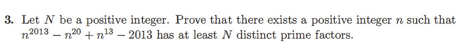

(Olympiad practice question answered by 16-year-old me)

Introduction
I grew up with the Mathematical Olympiads, a rite of passage for young math enthusiasts in my country as well as many others. It started as a curiosity, the school program for talented children, after the teacher found out in Grade 1 that I knew how to multiply two-digit negative numbers. From the beginning, the Olympiads were just a place to collect all the math whizzes to learn ahead of school, and there were around 4-5 people for each grade level. It ended, 11 years later, with the Open round’s multi-hour-long proof papers. In between was a long apprenticeship, spanning the entirety of my turbulent years between childhood and maturity.
I do have quite a lot to say about the Olympiads, although I no longer do those questions now. I never liked the idea of doing speed-mathematics, training only for something as superficial as competition awards. However, I did enjoy the problems themselves, enough to stay in the team. This is what I will talk about today.
First, a short introduction. The Olympiads in my country are divided into three sections — Junior, Senior, and Open. Junior is for ages 13-14, Senior for ages 15-16, and Open for pre-university students at ages 17-18. Of course, as you can see above, I attempted the Open Section questions at 16. The format consists of two rounds: Round 1 (short problems, some multiple-choice for Junior/Senior) and a rigorous invitational Round 2 where top scorers write full solution proofs. The questions, since Senior Section, go into early-undergraduate Number Theory and Combinatorics.
Competitions versus Research
I often think ill of competitions, with the dismissal that they don’t resemble 'real research' with its focus on cracking speed-based problems. After all, Terence Tao and Maryam Mirzakhani won medals in the IMO, but why would I care about those instead of their greater contributions? I prefer to actually savor mathematics, as something sacred and edifying. Just like Tao and Mirzakhani, and many more.
Funnily, the difference between the two efforts — research versus competition — evokes opposite opinions in different people. In contrast to ‘research people’, some end up remembering fondly upon the Olympiads but dismissing research for the very same reasons I criticize the Olympiads. Once, I overheard random strangers in a library complaining that the mathematics coursework for functional analysis ‘wasn’t like the Olympiads’. They complain that it shatters their self-esteem when they find out that mathematics isn’t like what they were used to back in school. The proofs are longer! They have a problem with proofs being long!
But I should first explain the differences, in depth:
First, research is a more ‘3D’ endeavor than competitions, which are more ‘2D’. With research, you will have to think about a problem for months, gaining as much knowledge after knowledge, building a framework ‘outside’ the question just to look back in, whereas in Olympiads you master one specific framework. I’ll cite a very simple example taken from G.H. Hardy’s A Mathematician’s Apology to explain the importance of an expansive, open-ended search. Even though Hardy was comparing types of theorems produced by research, I find this analogy better extended to computation versus production in general:

It is easy to find examples in the theory of prime numbers. Euclid’s theorem is very important, but not very deep: we can prove that there are infinitely many primes without using any notion deeper than that of ‘divisibility’. But new questions suggest themselves as soon as we know the answer to this one. There is an infinity of primes, but how is the infinity distributed? Given a large number N, say 1080 or 10 10^10, about how many primes are there less than N? When we ask these questions, we find ourselves in a different position. We can answer them, with rather surprising accuracy, but only by boring much deeper, leaving the integers above us for a while, and using the most powerful weapons of the modern theory of functions
Indeed, Olympiad mathematics is like being dropped into a locked room with a puzzle box. The room is clean, finite, and self-contained. Someone even cleaned it for you. You know that somewhere inside the box is the solution, and if you turn it the right way, use the right clever trick, it will click open. The skills required are precision, quick recognition, and tactical ingenuity. There is creativity involved, but creativity within the bounds. In contrast, research-level mathematics is like being dropped in an unmapped forest. There is no guarantee the problem even has a clean solution, or that you’re looking in the right part of the woods. You spend months learning the flora and fauna, mapping paths, sometimes building tools just to move a few meters forward. You might discover that to understand your problem, you first need to invent a new type of compass or learn the habits of a rare bird that only sings at dawn. Hence, the ‘framework’ you build is a vast scaffolding of hyperspecific knowledge whose entire purpose may be to shine a thin beam of light back onto your original problem. As a whole, it’s like building the syntax of a new language, from scratch, knowing only how languages can possibly be constructed through the kernel rules given in Chomskian linguistics.
Second, there is the issue of speed versus patience. Those competitions practically train people to be impatient. Or at least, patient enough on the scale of hours, but cracking at anything longer than that. But researching mathematics isn’t about speed. Of course, you still have to hand in your work before the deadline, but on the scale of months or years — it’s far more stretched out, to the point where the time matters very little. That’s not to say there’s no merit to what competitions do to your sense of time. There’s something fascinating about what the ticking clock actually does to your perception of logic. But before that, I can tell you that since I was a child, I often relied on Eureka moments to solve problems, and the Olympiads merely gave it a time-form. It feels like the entire problem-space has a pressure gradient, and so you register the strongest pressure in the geometry of possibilities as answers the way you register a slope underfoot. As I always saw it this way, I would probably have struck lightning in answering questions whether or not I ever joined the Olympiads. But the Olympiads are much more SPECIFIC. Time pressure forces you to compress intuition into split-second pattern recognition. So, after years of it, I found myself able to glance at a problem and see that it was related to 'Cauchy–Schwarz’, for instance. What’s the difference? Well, my normal ‘generic feel’ is global, as a background metric, but in comparison, the phenomenology of specific equations is local and discrete, a set of indexed triggers that commit you to a specific well-trod line or region. That is its own form of knowledge. In a sense, it is also ascetic. Nietzsche wrote about training the will through constraint, and Olympiad time limits are exactly that. They strengthen intuition under duress, but they also risk flattening mathematics into an arsenal of motifs. The ambiguity lies in the double edge, where you become both sharper and narrower.
A Celebration of Harmony
I’ve never been moved more by anything than beauty, a rapturous feeling of symmetry and oneness. I felt it for as long as I remember being alive, since I was a child playing with Rubik’s cubes, the strange ‘click’ in connecting disparate things and reducing them to its heart in some elegant resolution — and I’ve chased that euphoria ever since. That’s why, since I was a child, I never wanted to be anything other than a mathematician. I love how Einstein puts it: ‘I believe in Spinoza's God who reveals himself in the orderly harmony of what exists, not in a God who concerns himself with fates and actions of human beings’. Isn’t that what we seek? What I seek? I think real mathematics is a celebration of such harmony, not an act that takes the harmony for granted only to make it the backbone for drills. This beauty is Hardy’s main point in A Mathematician’s Apology, which I quoted above for another unrelated point.
On a related note, I want to share with you an excerpt from the book Indiscrete Thoughts.

Mathematicians can be subdivided into two types: problem solvers and theorizers. Most mathematicians are a mixture of the two although it is easy to find extreme examples of both types.
To the problem solver, the supreme achievement in mathematics is the solution to a problem that had been given up as hopeless. It matters little that the solution may be clumsy; all that counts is that it should be the first and that the proof be correct. Once the problem solver finds the solution, he will permanently lose interest in it, and will listen to new and simplified proofs with an air of condescension suffused with boredom.
The problem solver is a conservative at heart. For him, mathematics consists of a sequence of challenges to be met, an obstacle course of problems. The mathematical concepts required to state mathematical problems are tacitly assumed to be eternal and immutable.
Mathematical exposition is regarded as an inferior undertaking. New theories are viewed with deep suspicion, as intruders who must prove their worth by posing challenging problems before they can gain attention. The problem solver resents generalizations, especially those that may succeed in trivializing the solution of one of his problems.
The problem solver is the role model for budding young mathematicians. When we describe to the public the conquests of mathematics, our shining heroes are the problem solvers.
To the theorizer, the supreme achievement of mathematics is a theory that sheds sudden light on some incomprehensible phenomenon. Success in mathematics does not lie in solving problems but in their trivialization. The moment of glory comes with the discovery of a new theory that does not solve any of the old problems but renders them irrelevant.
The theorizer is a revolutionary at heart. Mathematical concepts received from the past are regarded as imperfect instances of more general ones yet to be discovered. Mathematical exposition is considered a more difficult undertaking than mathematical research.
To the theorizer, the only mathematics that will survive are the definitions. Great definitions are what mathematics contributes to the world. Theorems are tolerated as a necessary evil since they play a supporting role or rather, as the theorizer will reluctantly admit, an essential role in the understanding of definitions.
Theorizers often have trouble being recognized by the community of mathematicians. Their consolation is the certainty, which may or may not be borne out by history, that their theories will survive long after the problems of the day have been forgotten.
If I were a space engineer looking for a mathematician to help me send a rocket into space, I would choose a problem solver. But if I were looking for a mathematician to give a good education to my child, I would unhesitatingly prefer a theorizer.
Well, I think most mathematicians have a bit of both. I do too. I love solving problems and seeing the resolution fall into place. But I also prefer solving the big problems that make you think about why it can be this way, at all. So overall, I think there needs to be a balance. Rota was onto something, but the ‘types of mathematicians’ are continuous, not discrete. In the future, I imagine I’d like to solve Navier Stokes or the Riemann Hypothesis one day, but only — and I emphasize only — because these problems have a theoretical depth to them, able to clarify structures we view as fundamental. So maybe I’m more of a theorist, but a theorist who sees problems as ways to know more about the fundamentals, and hopes to pick the right problems.
How motivated was I with this symmetrical beauty? When I was a child, I remember being obsessed with exponentials. I actually learnt how to square numbers at a few years before it became part of the Olympiad questions. But it was mostly computational, not theoretical. Later, when I was 13, learning the Taylor series in calculus on Youtube, what really fired up my head was the part where ex hides infinitely many factorials — there’s a Heraclitean sense of opposition that almost seems majestic: on one hand, n!n!n! skyrockets, but the series divides by n!n!n! to control it. How could something so wild be balanced so effortlessly by factorials? I had seen factorials before, as tidy combinatorial counts in Olympiad problems, such as ways to arrange marbles, or ways to seat guests. But here, it was beautiful, and terrifyingly wonderful, that I remember pushing the notebook away and just sitting there, hollowed out, lost in an intoxicated feeling of needing to know why anything like that can even exist in concept. There was a contrast, where, in Olympiad style questions you know the solution exists, waiting; yet, here, maybe the universe didn’t owe me understanding, and I’d still try. For days after, I carried a quiet heaviness. But years later, I remembered that night, which was my strongest glimpse of what theoretical mathematics feels like from the inside, standing barefoot in the dark, chasing something wonderful, not knowing if your life will ever touch this beauty. But I finally figured out the proof, taking the rest of my 13th year to self-learn integration in calculus, until the factorial proof clicked into Eureka by the end. You see, proving the infinite factorials was like a celebration of how calculus makes motion speak. Can anything be more ecstatic for a curious 13-year-old?
Luckily, the Junior Math Olympiads since 13 included proofs, so it half-satisfied my need to celebrate this mathematical beauty for its own theoretical sake. The Olympiads already went beyond the easier school syllabus, which was nice. But a lot of the competition questions were proofs for Diophantine equations, the type of proofs for particular little curiosities you train yourself to become really quick at — the scope is just proving particular qualities for particular numbers, not a general law that can revolutionize your understanding of the underlying structure of numbers, like the factorial one did for me. Yes, the 13-year-old me knew how to prove that no positive integers x,y satisfy x2+1=3y, but it felt like using knowledge to navigate within the nice sense of harmony for a random assortment of values, not map out the very contours of this beauty itself. I was too ambitious to settle for just that.
I contrast mathematical ambition with social ambition. Prizes are for Asian parents to gloat over, which is a form of social ambition (my father used to be a professor, and he likes this kind of thing, even though he’d turned away from academia to religion by the time I was born). On the contrary, mathematical ambition is to be Prometheus and bring fire to light up the world so you can see the lay of the land more clearly. This is the reason why, despite being in the school team, I didn’t actually compete in the official national Olympiads. I didn’t really see the point in awards, but I just liked challenging myself, even if the challenges were a little limited — well, who cares, it’s still fun. But I did once join an open-registration Asia Division competition to see where I actually stood in terms of ability for my age. It was another of those Number-Theory-heavy competitions, the standard fare. I did well, but that, strangely, made me conflicted. As always, I found speed-based competitions lacking in mathematical depth, and I felt like I succeeded in something meant to produce speed over insight. I felt angry at myself for that, and had a low mood for days while also feeling elated at the same time. I know, it’s really odd. I should have been unabashedly celebrating. But can you blame me for loving beauty so much that I’m unwilling to sacrifice it for something too corporate and factory-made?
My Advice
In general, if you’re young and curious about mathematics, Olympiads can be a wonderful place to try it out. They sharpen your thinking and train your intuition under pressure. But more simply, they immerse you in elegant little proof problems that give you a lot of satisfaction when you solve them, even if you don’t get trained in anything (and you don’t have to!). But remember that it is only one ‘box’, and that mathematics is far larger, and stranger, than any contest can capture. Don’t mistake speed for depth, or clever tricks for understanding. Lastly, don’t forget that the real work, and the greater beauty, lies in exploring beyond the room you’ve been locked in, out into the unmapped forest. You’re good to go if you know all this.